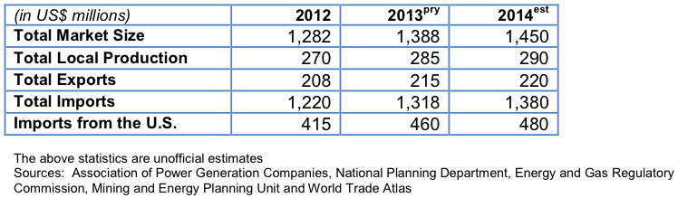

At the end of 2013, Colombia’s installed electric power generation capacity reached 14,524 MW, with a hydro-based capacity share of 63.6 percent and the remainder from gas and coal-fired power plants, small hydro systems, and cogeneration facilities. The Government of Colombia (GOC) has forecast that by 2019 the nation’s installed capacity will reach 18,671 MW, with an increased reliance on large-scale hydro systems.
In 2006, the Energy and Gas Regulatory Commission (CREG) enacted a “Reliability Charge” that recognizes the availability of generation assets to insure “firm generation capacity - OEF” under critical conditions. The charge allowed the project owners to start construction as the charge secured them of financial benefits. This has resulted in the development of several new power projects in Colombia including Porce III and IV, El Quimbo, HidroSogamoso and Pescadero-Ituango. This has also increased the share of hydro-based generation (to 72 percent).
Several large Colombian power companies, including Interconexión Eléctrica (ISA), Empresas Públicas de Medellín (EPM), ISAGEN S.A., and Empresa de Energía de Bogotá (EEB) are evaluating expansion projects to other Andean and Central American countries. The proposed power interconnection with Panama (SIEPAC) could lead to new power projects in Central America.
Efforts are underway to promote private ventures in the areas of solar, wind, geothermal, and small-hydro systems. If successful, these projects will allow for the use of energy in sustainable community projects. EPM owns the country’s sole wind power plant (Jepírachi) located in La Guajira. This is a 19.5 MW facility, with financial support from World Bank Prototype Carbon Fund greenhouse gas reduction credits. Other electric utilities are interested in pursuing renewable energy projects (mainly wind, geothermal, and run-of-river hydro). The GOC is evaluating market measures and regulations aimed at strengthening the country’s energy security.
Importers of U.S. electric power generation equipment benefit from the relative proximity of Colombia to the United States. And with the implementation on May 12, 2012 of the United States-Colombia Trade Promotion Agreement (FTA), Colombia will eliminate import duties for equipment, spare parts, and accessories for this sector.
The outlook for the Colombian electricity sector is promising since the GOC is planning to develop several new power generation projects through 2018, mostly hydro, to accommodate the expanded demand. Additionally, the GOC is exploring prospects for becoming a major exporter of electricity (including goods and services) to the Andean region and Central America.
As a result of this trend some solid business prospects exist to continue using hydroelectric plants with gas-fueled thermal energy generators, including cogeneration systems. Also, electricity trading and distribution companies are focusing on reducing losses by acquiring leading- edge management and control systems technologies. Another promising business opportunity is the Rural Energy Program, aimed at providing electrical power to off-grid areas using renewable energy systems such as solar, wind, and small and medium scale hydro plants. This program calls for new generation systems and improving existing systems. The GOC has taken steps to secure funding for the program.
To assist with these GOC efforts, the U.S. Trade and Development Agency has awarded feasibility study grants for a geothermal power plant (ISAGEN), a 20 MW landfill waste-to-energy facility, and a proposed solar-wind power project. In addition, USTDA is also supporting the GOC’s interest in applying SmartGrid technologies to improve the nation’s high-voltage transmission and distribution network.
Please contact Julio Carbó, Commercial Specialist of the U.S. Commercial Service at the U.S. Embassy Bogotá, Colombia at Julio.Carbo@trade.gov or 011-571-275-2723.